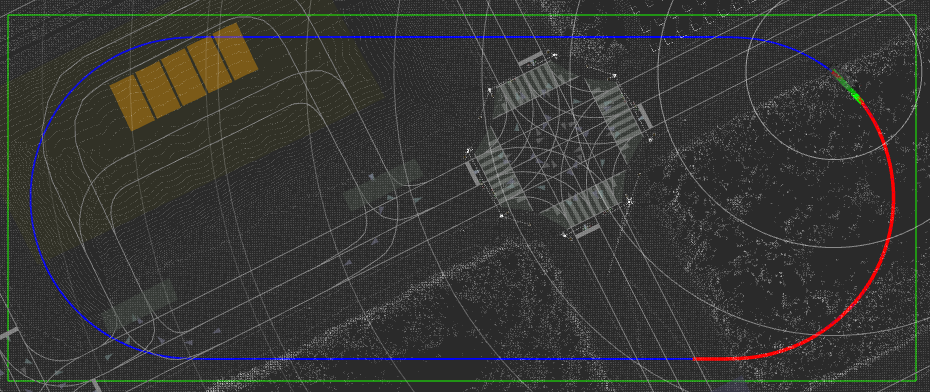

Control data collecting tool#
This package provides tools for automatically collecting data using pure pursuit control within a specified rectangular area.

Overview#
- This package aims to collect a dataset consisting of control inputs (i.e.
control_cmd) and observation variables (i.e.kinematic_state,steering_status, etc). - The collected dataset can be used as training dataset for learning-based controllers, including smart_mpc.
-
Data collecting approach is as follows:
- Following the trajectory using a pure pursuit control law.
- Adding noises to the trajectory and the control command for data diversity, improving the prediction accuracy of learning model.
-
Setting the trajectory from the following types of trajectories ( [
eight_course,u_shaped_return,straight_line_positive,straight_line_negative,reversal_loop_circle,along_road] ).-
COURSE_NAME: eight_course
-
COURSE_NAME: u_shaped_return
-
COURSE_NAME: straight_line_positiveorCOURSE_NAME: straight_line_negative( Both "straight_line_positive" and "straight_line_negative" represent straight line courses, but the direction of travel of the course is reversed.)

-
COURSE_NAME: reversal_loop_circleDrive within a circle while adding trajectories and collect data.

-
COURSE_NAME: along_roadGenerate trajectories along the road. This is particularly useful when drawing long straight paths along the road.
In this course, data collection is conducted only on long straight trajectories, while constant velocity,
velocity_on_curve, is maintained when driving on sections that include curves.The minimum length of these long straight trajectories can be specified using the parameter
minimum_length_of_straight_line(These two parametersvelocity_on_curveandminimum_length_of_straight_linecan be configured in./config/course_param/along_road_param.yaml).
-
How to Use#
-
Launch Autoware.
ros2 launch autoware_launch planning_simulator.launch.xml map_path:=$HOME/autoware_map/sample-map-planning vehicle_model:=sample_vehicle sensor_model:=sample_sensor_kit -
Set an initial pose, see here.
-
Add the DataCollectingAreaSelectionTool and DataCollectingGoalPlugin RViz plugins by clicking the "+" icon at the top of the RViz window.

-
Launch control_data_collecting_tool.
ros2 launch control_data_collecting_tool control_data_collecting_tool.launch.py map_path:=$HOME/autoware_map/sample-map-planning- If you use the
along_roadcourse, please specify the same map formap_pathas the one used when launching Autoware.map_pathis not necessary when using courses other thanalong_road.- Control data collecting tool automatically records topics included in
config/topics.yamlwhen the above command is executed. Topics will be saved in rosbag2 format in the current directory.- The data from
/localization/kinematic_stateand/localization/accelerationlocated in the directory (rosbag2 format) where the command is executed will be automatically loaded and reflected in the data count for these topics. (IfLOAD_ROSBAG2_FILESinconfig/param.yamlis set tofalse, the data is not loaded.) -
Add visualization in rviz:
-
/data_collecting_area- Type: Polygon -/data_collecting_trajectory_marker_array- Type: MarkerArray -/data_collecting_lookahead_marker_array- Type: MarkerArray -
The following actions differ depending on the selected course. If you select the trajectory from [
eight_course,u_shaped_return,straight_line_positive,straight_line_negative,reversal_loop_circle], proceed to 6.1. If you select the trajectory from [along_road], please proceed to 6.2.- 6.1 If you choose the trajectory from [
eight_course,u_shaped_return,straight_line_positive,straight_line_negative,reversal_loop_circle], selectDataCollectingAreaSelectionToolplugin.<img src="resource/DataCollectingAreaSelection.png" width="480"> Highlight the data collecting area by dragging the mouse over it. <img src="resource/select_area.gif" width="480"> > [!NOTE] > You cannot change the data collecting area while driving.- 6.2 If you choose the trajectory from [
along_road], selectDataCollectingGoalPoseplugin.<img src="resource/DataCollectingGoalPose.png" width="480"> By setting the pose of the goal point, a trajectory is generated on the map. <img src="resource/set_trajectory_along_road.gif" width="480"> As soon as the trajectory is generated, the plot with the map and trajectory drawn on it will be created (please see the following picture). In the sections labeled `velocity = const (velocity_on_curve)` in the legend, the vehicle travels at a constant velocity of `velocity_on_curve`. In the sections labeled `Data collection is conducted`, data collection is performed. <img src="resource/along_load_plot.png" width="480"> > [!NOTE] > You cannot change the goal pose while driving. > In cases where course generation fails, which can happen under certain conditions, please reposition the vehicle or redraw the goal pose. -
Click the
LOCALbutton onOperationModeinAutowareStatePanel.
Then, data collecting starts.
-
If you want to stop data collecting automatic driving, run the following command
ros2 topic pub /data_collecting_stop_request std_msgs/msg/Bool "data: true" --once[!NOTE] When the car crosses the green boundary line, a similar stopping procedure will be automatically triggered.
-
If you want to restart data collecting automatic driving, run the following command
ros2 topic pub /data_collecting_stop_request std_msgs/msg/Bool "data: false" --once
Parameter#
There are parameters that are common to all trajectories and parameters that are specific to each trajectory.
Common Parameters#
ROS 2 parameters which are common in all trajectories (/config/common_param.yaml):
| Name | Type | Description | Default value |
|---|---|---|---|
LOAD_ROSBAG2_FILES |
bool |
Flag that determines whether to load rosbag2 data or not | true |
COURSE_NAME |
string |
Course name [eight_course, u_shaped_return, straight_line_positive, straight_line_negative, reversal_loop_circle, along_road] |
reversal_loop_circle |
NUM_BINS_V |
int |
Number of bins of velocity in heatmap | 10 |
NUM_BINS_STEER |
int |
Number of bins of steer in heatmap | 20 |
NUM_BINS_A |
int |
Number of bins of acceleration in heatmap | 10 |
V_MIN |
double |
Minimum velocity in heatmap [m/s] | 0.0 |
V_MAX |
double |
Maximum velocity in heatmap [m/s] | 11.5 |
STEER_MIN |
double |
Minimum steer in heatmap [rad] | -0.6 |
STEER_MAX |
double |
Maximum steer in heatmap [rad] | 0.6 |
A_MIN |
double |
Minimum acceleration in heatmap [m/ss] | -1.0 |
A_MAX |
double |
Maximum acceleration in heatmap [m/ss] | 1.0 |
max_lateral_accel |
double |
Max lateral acceleration limit [m/ss] | 2.00 |
lateral_error_threshold |
double |
Lateral error threshold where applying velocity limit [m/s] | 1.50 |
yaw_error_threshold |
double |
Yaw error threshold where applying velocity limit [rad] | 0.75 |
velocity_limit_by_tracking_error |
double |
Velocity limit applied when tracking error exceeds threshold [m/s] | 1.0 |
mov_ave_window |
int |
Moving average smoothing window size | 50 |
target_longitudinal_velocity |
double |
Target longitudinal velocity [m/s] | 6.0 |
pure_pursuit_type |
string |
Pure pursuit type (naive or linearized steer control law ) |
linearized |
wheel_base |
double |
Wheel base [m] | 2.79 |
acc_kp |
double |
Accel command proportional gain | 1.0 |
lookahead_time |
double |
Pure pursuit lookahead time [s] | 2.0 |
min_lookahead |
double |
Pure pursuit minimum lookahead length [m] | 2.0 |
linearized_pure_pursuit_steer_kp_param |
double |
Linearized pure pursuit steering P gain parameter | 2.0 |
linearized_pure_pursuit_steer_kd_param |
double |
Linearized pure pursuit steering D gain parameter | 2.0 |
stop_acc |
double |
Accel command for stopping data collecting driving [m/ss] | -2.0 |
stop_jerk_lim |
double |
Jerk limit for stopping data collecting driving [m/sss] | 5.0 |
lon_acc_lim |
double |
Longitudinal acceleration limit [m/ss] | 1.5 |
lon_jerk_lim |
double |
Longitudinal jerk limit [m/sss] | 0.5 |
steer_lim |
double |
Steering angle limit [rad] | 0.6 |
steer_rate_lim |
double |
Steering angle rate limit [rad/s] | 0.6 |
The following parameters are common to all trajectories but can be defined individually for each trajectory. (/config/course_param/COURSE_NAME_param.yaml):
| Name | Type | Description | Default value |
| :--------------------------------------- | :------- | :-------------------------------------------------------------------------------------------------- | :------------- |
| COLLECTING_DATA_V_MIN | double | Minimum velocity for data collection [m/s] | 0.5 |
| COLLECTING_DATA_V_MAX | double | Maximum velocity for data collection [m/s] | 8.0 |
| COLLECTING_DATA_A_MIN | double | Minimum velocity for data collection [m/ss] | 1.0 |
| COLLECTING_DATA_A_MAX | double | Maximum velocity for data collection [m/ss] | -1.0 |
| longitudinal_velocity_noise_amp | double | Target longitudinal velocity additional sine noise amplitude [m/s] | 0.01 |
| longitudinal_velocity_noise_min_period | double | Target longitudinal velocity additional sine noise minimum period [s] | 5.0 |
| longitudinal_velocity_noise_max_period | double | Target longitudinal velocity additional sine noise maximum period [s] | 20.0 |
| acc_noise_amp | double | Accel command additional sine noise amplitude [m/ss] | 0.01 |
| acc_noise_min_period | double | Accel command additional sine noise minimum period [s] | 5.0 |
| acc_noise_max_period | double | Accel command additional sine noise maximum period [s] | 20.0 |
| steer_noise_amp | double | Steer command additional sine noise amplitude [rad] | 0.01 |
| steer_noise_max_period | double | Steer command additional sine noise maximum period [s] | 5.0 |
| steer_noise_min_period | double | Steer command additional sine noise minimum period [s] | 20.0 |
Course-Specific Parameters#
Each trajectory has specific ROS 2 parameters.
COURSE_NAME: eight_course
| Name | Type | Description | Default value |
|---|---|---|---|
velocity_on_curve |
double |
Constant velocity on curve [m/s] | 4.5 |
smoothing_window |
double |
Width of the window for trajectory smoothing | 400 |
COURSE_NAME: u_shaped_return
| Name | Type | Description | Default value |
|---|---|---|---|
velocity_on_curve |
double |
Constant velocity on curve [m/s] | 4.5 |
COURSE_NAME: straight_line_positiveorCOURSE_NAME: straight_line_negative
| Name | Type | Description | Default value |
|---|---|---|---|
stopping_buffer_distance |
double |
The safety distance from end of the straight line [m] | 10.0 |
COURSE_NAME: reversal_loop_circle
| Name | Type | Description | Default value |
|---|---|---|---|
trajectory_radius |
double |
Radius of the circle where trajectories are generated [m] | 35.0 |
enclosing_radius |
double |
Radius of the circle enclosing the generated trajectories [m] | 40.0 |
look_ahead_distance |
double |
The distance referenced ahead of the vehicle for collecting steering angle data [m] | 15.0 |
COURSE_NAME: along_road
| Name | Type | Description | Default value |
|---|---|---|---|
velocity_on_curve |
double |
Constant velocity on curve [m/s] | 3.5 |
stopping_buffer_distance |
double |
The safety distance from end of the straight line [m] | 15.0 |
course_width |
double |
The width of the trajectory [m] | 1.5 |
smoothing_window |
double |
Width of the window for trajectory smoothing | 100 |
minimum_length_of_straight_line |
double |
The minimum length of straight line for data collection [m] | 50.0 |
longitude |
double |
The longitude of the origin specified when loading the map [degree] | 139.6503 |
latitude |
double |
The latitude of the origin specified when loading the map [degree] | 35.6762 |